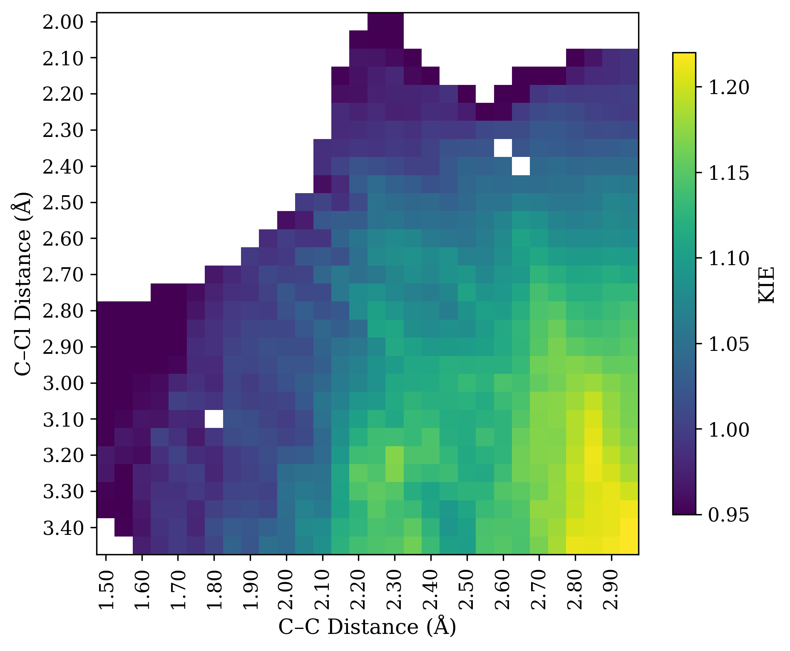
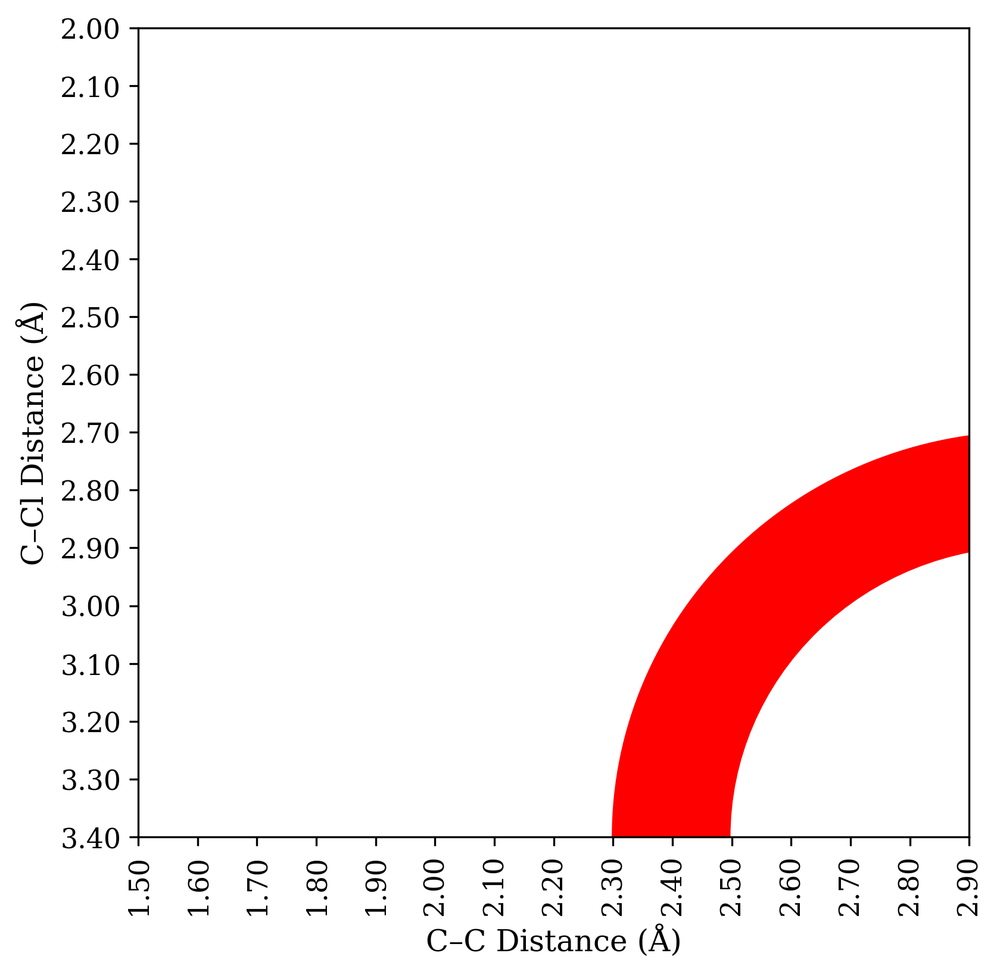

Note: old versions of this post lacked a discussion of SN2. I've added an appendix which remedies this.
In “The Rate-Limiting Span,” I discussed how thinking in terms of the span from ground state to transition state, rather than in terms of elementary steps, can help prevent conceptual errors. Today, I want to illustrate why this is important in the context of a little H/D KIE puzzle.
Consider the following reaction, which could conceivably proceed via an SN2 mechanism (red), an SN1 mechanism (blue), or really anywhere on the continuum:
This is a bit of a silly reaction, admittedly. The intermolecular version or the endo version would have been better.
What experiment can be used to investigate the mechanism of this reaction? One possibility is an alpha H/D KIE experiment at the iminium position. Reactions with a sp3 ground state and an sp2 transition state display secondary normal alpha H/D KIEs, while reactions with an sp2 ground state and an sp3 transition state display secondary inverse KIEs.
Thus, one might think “if iminium formation is rate-limiting, the KIE will be normal, but if alkene addition is rate-limiting, the KIE will be inverse.”
Unfortunately this is not true. Instead, all mechanistic possibilities give secondary normal KIEs! I investigated this model system computationally at the wB97X-D/6-31G(d)/SMD(CH2Cl2) level of theory. Here’s a More O’Ferrall–Jencks plot of the H/D KIE at the iminium position, computed with PyQuiver
(breaking bond on Y axis, forming bond on X axis):

The raw data from PyQuiver is a little fuzzy, so I applied a convolution to smooth the data. Details later on.
Rather than telling us which step is rate-limiting, all the KIE shows us is how much the transition state resembles an iminium ion (bottom right). Structures with long C–Cl bond distances and short C–C bond distances have substantial isotope effects (around 20%), while structures with forming or breaking bonds have smaller isotope effects.
Why is this? Both ionization and addition proceed through iminium-like structures that are substantially sp2-hybridized at carbon, irrespective of whether sp2 character is technically increasing or decreasing in the elementary step. Relative to the starting material, both transition states look like iminium ions and thus lead to large isotope effects.
These both look pretty much like iminium ions.
We can also conceptualize this in terms of elementary steps. Taken by itself, alkene addition does lead to an inverse kinetic isotope effect, as seen by the decreasing values as one moves left from the iminium—but an inverse isotope effect relative to the normal equilibrium isotope effect of the iminium. In this system, the equilibrium isotope effect of the iminium is larger than the kinetic isotope effect for alkene addition, and so the combination of these two effects leads to a (smaller) overall normal effect.
(This is the opposite of primary H/D KIEs, where central transition states lead to the largest isotope effects and equilibrium effects are typically small. Here, the isotope effect is mainly a function of hybridization, and so the later the TS, the greater the difference in hybridization and the larger the isotope effect.)
In summary, although this experiment seems informative, it’s actually not very useful. It tells you something about the structure of the transition state, but not which step is rate-limiting! In this case, a better experiment would be to measure 13C KIEs, or an H/D KIE on the nucleophile.
Appendix I: What About SN2?
On Twitter, Mark Levin asks about the KIE for the concerted path. I originally meant to include a discussion of this, but then totally forgot to! So let’s fix that.
As shown in the graph above, extremely concerted pathways (i.e. going right down the middle of the MOJ plot) will have pretty small isotope effects. These sorts of mechanisms are common where the carbocation would be extremely unstable (methyl iodide) but much less common for stabilized carbocations like we’re discussing here. When oxocarbeniums or iminiums are involved, even “concerted” mechanisms shift towards the bottom right corner: this is the “loose”/“exploded” SN2 often seen in glycosylation. These pathways will have a modest to large H/D KIE, depending on the exact system and how “exploded” they are (see page 53 of this SI for examples)
Putting this together, then, what experimental results would be conclusive? A very small KIE would be diagnostic for a “classic” synchronous SN2 process, which I consider to be very unlikely here. But medium or large H/D KIEs are consistent with any possibility: SN1 with rate-limiting ionization, SN1 with rate-limiting nucleophilic attack, or a loose SN2. There’s an annulus of different mechanistic possibilities that all give about the same isotope effect, as shown below:

Any TS in the red zone is consistent with a moderately large KIE (say, 15%).
To make matters worse, H/D KIEs are pretty tough to simulate quantitatively, because of tunneling, so the annulus isn’t even that precise. That’s why I think this isn’t a very good experiment.
Appendix II: Smoothing the KIE Grid
The raw KIE values from PyQuiver were pretty noisy, probably because there are small or multiple imaginary frequencies for some of these non-stationary points, so I used convolution to smooth things out a bit.
import numpy as np
from scipy.ndimage import convolve
#### this code block takes a 2d np.ndarray of KIE values
#### and returns a smoothed np.ndarray with the same dimensions
corner_w = 0.05
edge_w = 0.2
kernel = np.array([
[corner_w, edge_w, corner_w],
[edge_w, 1 ,edge_w],
[corner_w, edge_w, corner_w]
])
kernel = kernel / np.sum(kernel)
smooth_grid = convolve(kie_grid, kernel, mode="nearest")
I haven’t seen this technique used before, but it doesn’t seem unreasonable to me.
Last January, I aimed to read 50 books in 2022. I got through 32, which is at least more than I read in 2021.
There’s been a bit of discourse around whether setting numerical reading goals for oneself is worthwhile or counterproductive. I don’t have a strong opinion in the abstract, but I noticed that consciously tracking how many books I read served as a little nudge to read more than I would otherwise, without really compromising the quality of books I was reading.
In order, then:
#1. Neal Stephenson, Snow Crash (reread)
I read this in high school, and wanted to read it again in light of recent Metaverse-related discourse. It didn’t disappoint, although it’s a little more “action movie” than Stephenson’s later works.
#2. Aristotle, Nicomachean Ethics
#3. Tim Keller, Prayer (reread)
#4–17. Robert Jordan & Brandon Sanderson, Wheel of Time
Beyond the surface-level plot (which is fun), Wheel of Time is a fascinating exploration of a number of societies structured around complementarianism at a deep level.
#18. Paul Tripp, Parenting
#19. Peter Thiel, Zero To One
#20. Peter Scazzero, Emotionally Healthy Spirituality
#21. Eric Berger, Liftoff
This is a good account of the early days of SpaceX, and works well as a book-length answer to the question “What decisions or mindsets allowed Elon Musk to succeed in starting a rocket company when so many other billionaires failed?” or equivalently “What—besides money—explains SpaceX’s success?”
My summary, based on the book, would be (in no particular order): (1) a focus on recruiting top talent, (2) a “can-do” spirit / commitment to moving quickly and recklessly, (3) decisive decision-making at top levels of the organization, (4) a willingness to internalize lots of tasks to increase efficiency, and (5) luck.
#22. Roald Dahl, Going Solo
#23. Yiyun Li, Must I Go
#24. Tyler Cowen & Daniel Gross, Talent
#25. Stanley Gundry (Ed.), Five Views on Law and Gospel
This book presents five different theological “takes” on the relationship between Old Testament law and the New Testament—there was much less consensus than I expected! It is interesting but scholarly, and not an easy read.
There are a whole bunch of books in this series; each author writes an essay explaining their position, and then writes brief responses to the other authors’ positions. This format should be more common!
#26. Albert Hirschman, Exit, Voice, and Loyalty
I discussed pieces of this book here; the rest is also good.
#27. Celeste Ng, Little Fires Everywhere
#28. Fuchsia Dunlop, The Food of Sichuan
#31. Margaret Atwood, Oryx and Crake
#32. Alison Weir, The Wars of the Roses
This book is a nice account of the Wars of the Roses in the style of a novel; I didn’t know anything beyond the broad strokes, so I found it quite gripping. My biggest complaint is that the book only goes through 1471, and so doesn’t cover any of the Bosworth Field-adjacent events.
My reading this year was about 50% fiction (18 books), with the remainder mostly divided between business (5 books) and Christianity (5 books). My main goal for next year is to read more history; I didn’t end up reading very much history this year, and I miss it.
A technique that I’ve seen employed more and more in computational papers over the past few years is to calculate Boltzmann-weighted averages of some property over a conformational ensemble. This is potentially very useful because most complex molecules exist in a plethora of conformations, and so just considering the lowest energy conformer might be totally irrelevant.
To quote a recent perspective from Grimme and friends:
For highly flexible structures, a molecular property, such as energy, nuclear magnetic resonance spectra, or optical rotation values may not be sufficiently described by a single structure. At finite temperatures, various conformers are populated and the overall property must be described as thermal average over the unique property values of each conformer.
What's been bothering me about this, however, is that Boltzmann weights are calculated as e to the power of the relative energy:
Since relative energies of conformers are usually calculated with only middling accuracy (±0.2 kcal/mol with common methods), we’re taking the exponential of a potentially inaccurate value—which seems bad from the standpoint of error propagation!
Excerpt from xkcd, on error propagation (line #3 is what's relevant here).
Grimme and co-authors address this point explicitly in their review:
At the same time, however, conformational energies need to be accurate to within about 0.1–0.2 kcal mol−1 to predict Boltzmann populations at room temperature reasonably well. This is particularly important since properties can vary strongly and even qualitatively between populated conformers…
Although the best answer is, of course, to just get more accurate energies, it's not always practical to do that in the real world.
If we take imperfect energies as our starting point, what's the best strategy to pursue?
One could imagine a scenario in which error causes relatively unimportant conformers to end up with large weights, making the answer even worse than the naïve approach would have been. If the lowest energy conformer accounts for 60-70% of the answer, might it be best to just stick with that, instead of trying to throw in some messy corrections?
To test this, I drew a random flexible-looking molecule with a few functional groups, conducted a conformational search using crest, and then optimized it and calculated 19F NMR shieldings using wB97X-D/6-31G(d). (There are better NMR methods out there, but the absolute accuracy of the shift isn’t really the point here.)
The lowest energy conformer of the molecule I drew (3-fluorohex-5-enal).
I then computed more accurate energies using DLPNO-CCSD(T)/cc-pVTZ, and compared the results from Boltzmann weighting with DFT and coupled-cluster energies.
(19F values are just the isotropic shielding tensor, and energies are in kcal/mol.)
Conformer
19F shift
DFT energy
DFT weight
CC energy
CC weight
c00003
401.76
0.00
0.624
0.00
0.529
c00001
403.08
1.02
0.112
0.68
0.167
c00010
396.63
1.12
0.093
1.10
0.083
c00007
391.45
1.56
0.045
1.54
0.039
c00004
396.77
1.82
0.029
1.64
0.033
c00006
400.16
2.31
0.013
1.75
0.028
c00029
400.37
2.36
0.012
1.75
0.028
c00032
393.96
2.05
0.020
1.76
0.027
c00027
394.60
2.54
0.009
2.21
0.013
c00017
394.69
3.12
0.003
2.27
0.011
c00018
402.24
2.24
0.014
2.35
0.010
c00011
381.31
2.59
0.008
2.49
0.008
c00023
388.77
2.51
0.009
2.54
0.007
c00013
390.32
3.02
0.004
2.61
0.006
c00020
394.97
3.23
0.003
2.62
0.006
c00015
398.24
3.02
0.004
2.97
0.004
Final 19F Shift
400.20
400.13
The match is really quite good, much better than just guessing the lowest energy conformer would have been! This is despite having a decent number of low-energy conformers, so I don’t think this is a particularly rigged case.
But, what if we just got lucky in this case? The relative energies are off by 0.28 kcal/mol on average. If we simulate adding 0.28 kcal/mol of error to each of the “true” energies a bunch of times, we can see how well Boltzmann weighting does on average, even with potentially unlucky combinations of errors.
Shifts from 100,000 simulations with random error added to CCSD(T) energies.
The above image shows the predicted shift from 100,000 different randomly generated sets of “wrong” energies. We can see that the Boltzmann-weighted value is almost always closer to the true value than the shift of the major conformer is (99.01% of the time, to be precise). This is despite substantial changes in the weight of the major conformer:
Major conformer weights from 100,000 simulations with random error added to CCSD(T) energies.
Thus, we can see that Boltzmann weighting is relatively resistant to random errors in this case. Although this is only one molecule, and no doubt scenarios can be devised where inaccurate energies lead to ludicrously incorrect predictions, this little exercise has helped temper my skepticism of Boltzmann weighting.
Thanks to Eugene Kwan and Joe Gair for discussions around these topics over the past few years. Data available upon request.
Today I want to engage in some shameless self-promotion and highlight how cctk, an open-source Python package that I develop and maintain with Eugene Kwan, can make conformational searching easy.
Conformational searching is a really crucial task in computational chemistry, because pretty much everything else you do depends on having the correct structure in the computer. In simple cases you can just draw out every conformer manually, but as the system under study gains degrees of freedom it becomes increasingly impractical to think through every possibility.
Failure to identify the correct conformer can lead to completely incorrect results, as demonstrated by Neese and coworkeers in this recent article. They reexamine a reaction originally studied by Ben List and demonstrate that the conformers examined in the initial publication are almost 5 kcal/mol above the true lowest-energy conformers.
Figure 1 from the paper; the previously reported conformers are shown in green.
Conformational searching approaches attempt to prevent this sort of error by automating the process of finding conformers. There are lots of different algorithms one can use, like low-mode searching, metadynamics, and replica exchange (to name just a few), and decades of literature on this topic.
Since conformational searching requires many individual calculations, it’s almost never practical to do a conformational search at a high level of theory (e.g. using DFT or ab initio methods). Instead, forcefields or semiempirical methods are generally used, with the caveat that the conformers generated might have somewhat inaccurate geometries.
cctk uses crest (from Grimme and coworkers), which uses a metadynamics-based algorithm with the GFN2-xtb semiempirical method to generate and score conformers. Although crest isn’t perfect, it’s simple, easy to use, and often generates very reasonable results.
I personally find the crest syntax a little tough to remember, so I’ve created a Python script so that I don’t have to look it up every time.
Installing Packages
To run this tutorial, you’ll need to have cctk and crest installed. It’s often easiest to manage dependencies using a conda environment; if you don’t already have one, you can create one for this project with this code:
And in the future, you can activate the environment like this:
conda activate chem
Running the Tutorial
The files for this tutorial can be found here. ex.yaml, which is the only file you should need to modify, contains all the information needed for the python script do_crest.py:
# list of atoms to constrain
# atom1, atom2, distance (or "auto" to keep distance from initial geometry)
constraints:
constraint1: 17 31 auto
constraint2: 30 31 auto
# location of input geometry, either as Gaussian .gjf or .out file
input_geom: pictet_spengler.gjf
# directory in which crest will run (will be created)
directory: crest
# name of logfile
logfile: crest.log
# whether or not this is a noncovalent complex (true or false).
# this simply gets passed to crest; some settings are changed.
noncovalent: false
To generate conformers, simply run:
python do_crest.py ex.yaml
This takes about 30 seconds to run on my laptop, and will generate about a hundred output conformers, which can (if desired) be further refined using DFT.
Hopefully this is useful! Please feel free to contact me with questions or bug reports.
Since my previous “based and red pilled” post seems to have struck a nerve, I figured I should address some common objections people are raising.
Although this is obvious, I wanted to preface all of this by saying: this is my opinion, I'm not some expert on systems of science,
and many of the criticisms come from people with much more scientific and institutional expertise than me.
It's very possible that I'm just totally wrong here!
But what I'm saying makes sense to me, and (it seems) to a lot of other people, so I think it's at least worth having this discussion.
Commenters Who Feel 13C NMR Is Scientifically Crucial
A few people pointed out that there are lots of instances in which carbon NMR is very important
(1,
2,
3,
4,
5).
I don't disagree with this at all; I've also used 13C NMR to solve problems that 1H NMR and mass spectrometry alone couldn't solve!
But just because it’s crucial sometimes doesn’t mean it’s crucial all the time.
Does anyone really think that you need carbon NMR to tell if Boc protection of a primary amine worked?
Most of the reactions that people do—especially people for whom synthetic chemistry is a means and not an end—are pretty straightforward, such that I think it’s fair to assume you could deduce the correct product with high confidence without 13C NMR.
(Again, if carbon spectra were so crucial, it wouldn’t be the case that many people don’t get them until the very end of the project.)
Commenters Who Feel That It's Important To Have Non-Crucial Data To Test Your Hypotheses
This point was also made by a number of people
(1,
2,
3),
perhaps most succinctly by “Chris Farley”:
Never meet your heroes.
I think this is an important point—part of what we ought to do, as a scientific community, is challenge one another to test our hypotheses and scrutinize our assumptions. Nevertheless, I’m not convinced this is a particularly strong argument for carbon NMR specifically. What makes 13C{1H} spectra uniquely powerful at challenging one’s assumptions, as opposed to other data?
Keith Fritzsching points out that HSQC is much faster and gives pretty comparable information (as did other readers, privately), and simply replacing 13C with HSQC in most cases seems like it would nicely balance hypothesis testing with efficiency.
(Relatedly, Xiao Xiao recounts how reviewers will request 13C spectra even when there’s plenty of other data, including HSQC and HMBC. This is a pretty nice illustration of how powerful status quo bias can be.)
Commenters Who Say Carbon Spectra Are Easy To Acquire
(cue flashbacks to undergraduate me trying to dissolve enough of some tetracyclic monster in pyridine-d5 to see my last quat)
I've heard this from plenty of people before, and it's true that sometimes it's not hard at all to get a nice carbon spectrum! But sometimes it is really hard, also.
Based on the other responses, it seems like lots of other people agree with this sentiment.
(Is it possible that some of this disagreement reflects whether one has access to a helium cryoprobe?)
Commenters Who Feel It's Important To Have Consistent Journal Standards
A few people pointed out that making carbon NMR necessary on a case-by-case basis would be burdensome for editors and reviewers, since they'd have to think through each case themselves
(1, 2).
This is a fair point, and one I don't have a good response to.
However, it's worth noting that this is already what we do for pretty much every other claim, including many complex structural problems: give the data, draw a conclusion, and ask reviewers to evaluate the logic.
Arguments about where the burden of proof should lie are tedious and usually unproductive, but I think we should have a pretty high barrier to making specific methods de jure required for publication.
Commenters Who Dislike My Claim That Journals Could Permit More Errors
I'm going to highlight Dan Singleton here, someone I respect a ton:
The thread goes on, obviously, and is worth reading.
I’m not trying to suggest that journals ought not to care about accuracy at all; ceteris paribus, accuracy should be prioritized. But given that we’re all constrained by finite resources, it’s important to consider the tradeoffs we’re making with every policy decision. It’s possible that trying to increase accuracy by asking for more data could have deleterious consequences:
There’s clear extremes on both ends: requiring 1H NMR spectra for publication is probably good, but requiring a crystal structure of every compound would be ridiculous.
I think it’s easiest to think about these issues in terms of two separate questions: (1) relative to where we are today, should we push for more accuracy in the literature or less, and (2) are we achieving our chosen degree of accuracy in the most efficient manner possible?
The first question is clearly complex, and probably deserves a longer and fuller treatment that I can provide here—although I’ll note that others have espousedmore radical positions than mine on peer review (h/t Michael Bogdos for the second link). I hope to write more on this subject later.
But the second question seems more straightforward. Is requiring 13C NMR for every compound a Pareto-optimal way to ensure accuracy, as opposed to HSQC or HMBC? I struggle to see how the answer can be yes.